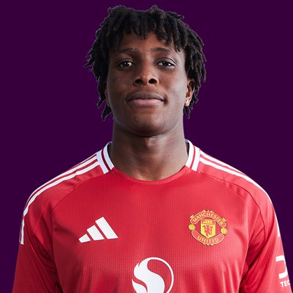

PITCHKEEP
Premier League ranks
Player File · MID MUN · Premier #193

Patrick Dorgu
MID · Man Utd · age 21 · £6.0m
2025/26 Premier League
| Year | Starts | Min | G | A | xG | xA | CS | GC | Bonus | YC | Sleeper | FPL |
|---|---|---|---|---|---|---|---|---|---|---|---|---|
| 2025/26 | 15 | 1440 | 4 | 4 | 2.39 | 1.84 | 4 | 20 | 11 | 5 | 122.0 | 95 |
Plus
- 122.0 Sleeper BPL 2025 points (Pitch #100).
Minus
- Consensus 208.5 vs Sleeper #100 — the industry is cooler than last year's box score.
- Board spread 89–248 (FPL ICT Index to RotoWire FPL 400).
PitchKeep Take · The Premier
Patrick Dorgu is a midfielder for Man Utd, age 21, £6.0m. The Premier ranks him 193rd overall by splitting Sleeper BPL 2025 (#100, 122.0 points) with the consensus of 2 other boards (208.5). Last year's Sleeper line ran 108 spots ahead of the expert/FPL mix. The third list keeps some of that production bump and refuses to throw the other boards out. That is the whole point of not just republishing The Pitch.
The 2025/26 Premier League line is 15 starts and 1440 minutes, 4 goals and 4 assists, 48 tackles and 50 CBI. Official FPL scored it at 95 points (3.7 per match) with 11 bonus. Sleeper's table turned the same counting stats into 122.0. Midfielders get 9 a goal, 6 an assist, and 1 a clean sheet, plus a full tackle/CBI stream. That is why a six who plays every week can outrank a ten-goal winger who sits.
Underlying: 2.39 xG, 1.84 xA, 4.23 xGI. He finished 1.6 above expected goals and 2.2 above expected assists. Role at Man Utd is the 2026/27 question sitting under the 2025/26 number. 15 starts is a starter. Anything under 25 starts is a rotation warning we already priced. Minutes are the skill that survives a finishing regression. The friendliest board is FPL ICT Index at 89; the coldest is RotoWire FPL 400 at 248.
Market: £6.0m, 9 boards on the file. Price is the FPL tax, not the rank. The Premier is who produced and who the boards still believe. FPL's own EP-next is 2.1. ICT 120.3.
Instruction: he is on the 400, which is already a statement, and he is not a star. Stash in Sleeper if the minutes are real. Do not let a Pitch screenshot make you start him over a Premier top-80. Nearby on The Premier: Merlin Röhl, Oscar Bobb, Kobbie Mainoo. Versus The Pitch (Sleeper-only #100), the hybrid moves him down to #193. That move is the third list doing its job.
Age 21 is the other half of a hybrid. The 2025/26 counting line is one season. The Athletic-style youth lean on this desk exists specifically so a Man Utd kid does not get stuck behind a 32-year-old who had a nice bonus year. Sleeper still has to see the minutes. 15 starts is the beginning of a case, not the end of one.
How to use the file: The Pitch is the Sleeper-only 400 (he is #100 there). The Premier is the 50/50 with every other board we track. Attack, Midfield, Defence, and Keepers re-rank the same Sleeper table by position. BK Value on this page follows The Premier when you are on the hybrid calculator and The Pitch when you are on the Sleeper calculator. Same curve either way — 12,000 at 1.01. Unranked sources are skipped, never treated as 999, which is why a player missing from Yahoo's XI is not secretly ranked 400th.
Sleeper vs FPL
Same 2025/26 line, two scoring tables
Board graph
Spread 89–248 · 9 sources
Tape · 2025/26 Premier League
Patrick Dorgu 2025/26 - Man United Future - Skills, Goals & Assists | HD
Every Board
Spread 89–248 · 9 sources
| Source | Rank |
|---|---|
| FPL ICT Index | 89 |
| FPL Price Board | 92 |
| Sleeper BPL 2025 | 100 |
| FPL xGI | 122 |
| FPL 2025/26 Points | 135 |
| FPL EP Next | 145 |
| FPL Ownership | 159 |
| RotoWire Fantrax / Sleeper 400 | 169 |
| RotoWire FPL 400 | 248 |
All players · The Premier · The Pitch · PK News · Calculator